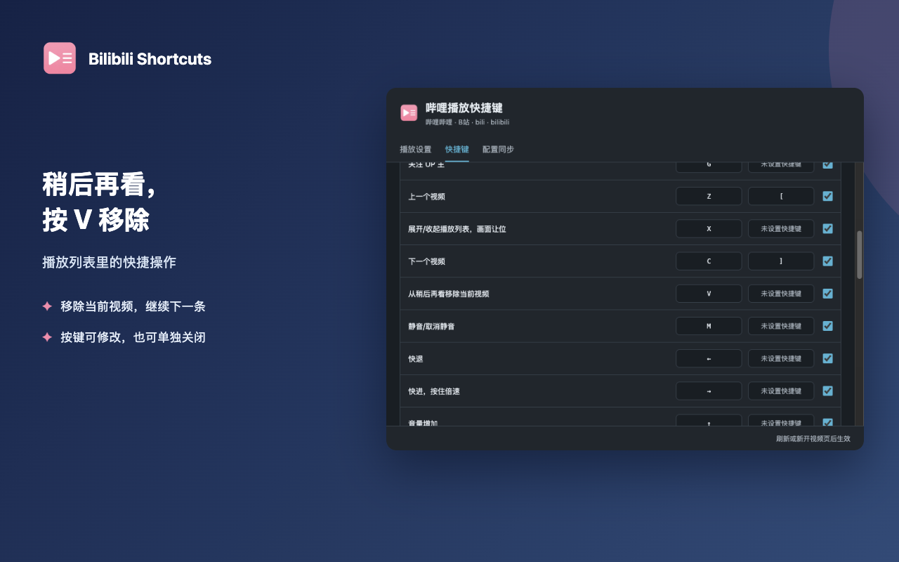
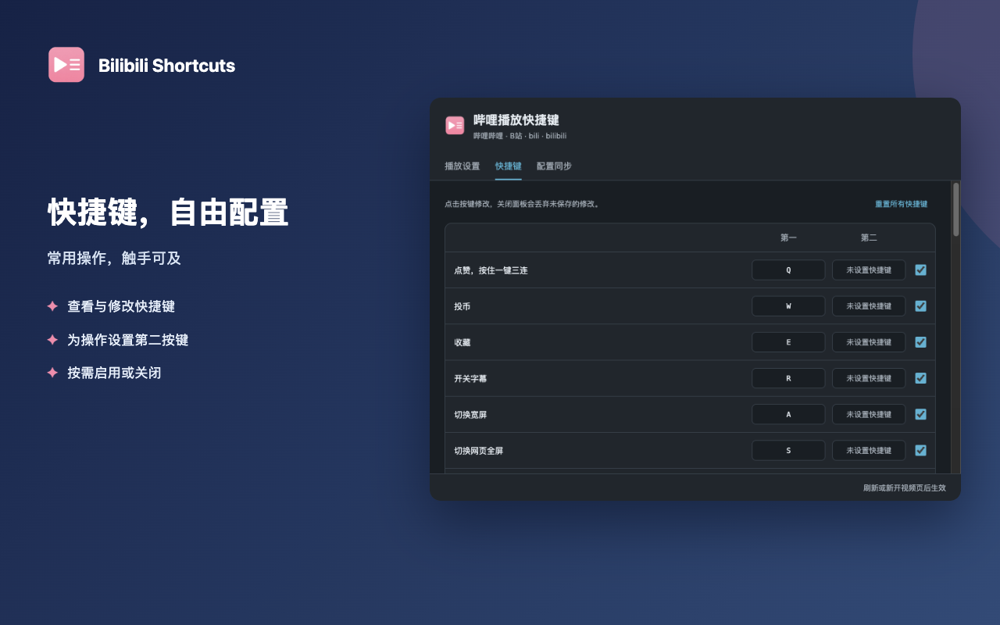
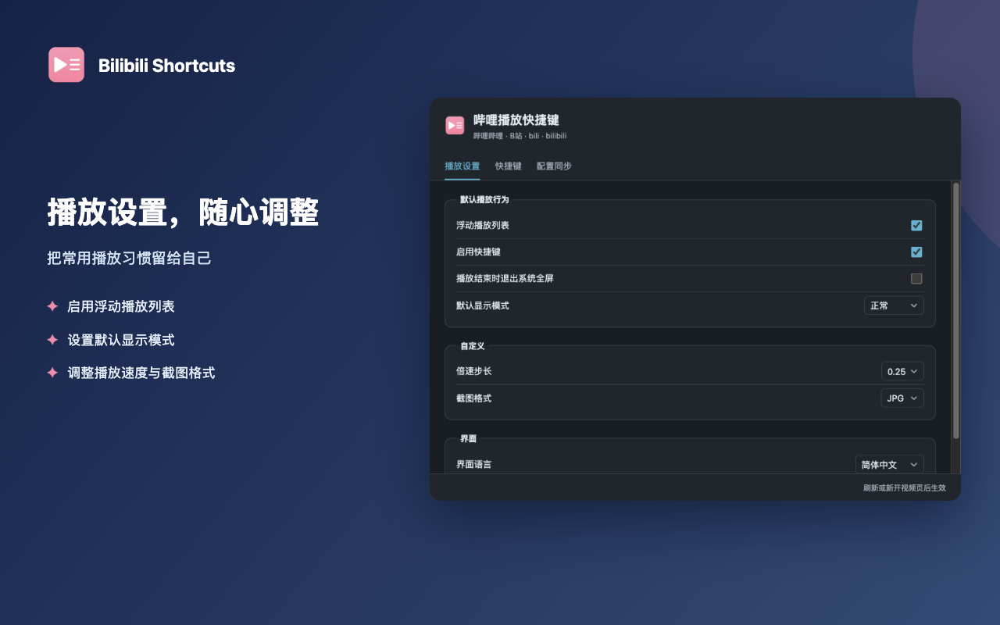

全屏里直接选下一集
网页全屏或系统全屏时，把鼠标移到画面右上侧即可打开浮动列表。点击图钉或按 X 固定，边看边切换合集、稍后再看或推荐视频。
网页全屏或系统全屏时，把鼠标移到画面右上侧即可打开浮动列表。点击图钉或按 X 固定，边看边切换合集、稍后再看或推荐视频。
从 B 站首页顶栏打开「稍后再看」。在列表播放页按 V 移除当前视频并播放下一条，按 B 撤销本页最近一次移除，回到原视频和播放位置。

默认用空格播放或暂停，轻按左右方向键前后跳 5 秒，按 - 和 + 调整倍速。也可以在设置中按功能或 Mac 键位图重新绑定按键。

暂停后轻按 , 或 . 逐帧定位。选好画面，再按 Shift + S 保存为 PNG 或 JPG，默认保存为 PNG。

保存设置后，刷新当前视频页，或打开一个新的视频页。
搜索框和评论框会保留正常的输入行为。离开输入框后即可继续用键盘控制播放。
在扩展设置中打开「同步与备份」，可导出或导入 JSON 配置。
Chrome 网上应用店更新于